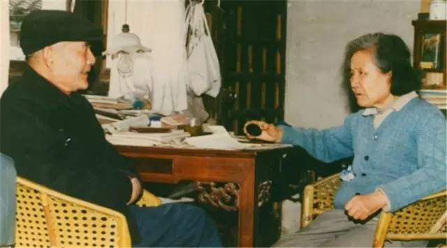
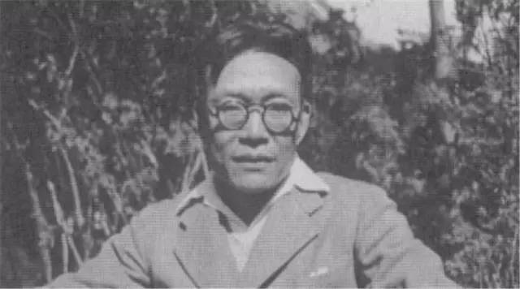

从前慢，一生只够爱一个人
 1,628
1,628
我们回望过去，一代比一代多情，
我们放眼未来，一代比一代无情，
这不是一个痴情的时代，
我们却总希望一份深情，
我们看过那些漫长的爱情故事，
才开始相信，最浪漫的事，
是一生只爱一个人。
平如与美棠
87岁时，饶老先生患有老年痴呆症的妻子美棠去世。后来他无以排遣，将他两的故事画了下来：
两个人六十年相守历尽坎坷，中间甚至一别二十多年，他们当掉过婚戒，遗失过结婚照，美棠没埋怨过，平如却一一记得，日子好了，他买来戒指补上，美棠走后，他又凭回忆画下了婚礼照片。
柴静曾在节目中问饶老先生：“您已经90岁了。难道这么长时间，没有把这个东西磨平了，磨淡了？”老爷爷回答说：“磨平？怎么讲能磨的平呢？爱这个世界是很久的，这个是永远的事情。”
|
我们在江西大旅社大厅门口的入口处拍结婚照。这个门口并不十分宽大，呈扇形，四级台阶，两侧各有一根爱奥尼柱，檐亦扇形有纹饰。六十年来人世沉浮如飘萍无定，这张相片也散失在岁月里，然而回想起当日拍照时的情境，当时的光线怎样伏上这一檐一柱，至今历历眼前。 |
（饶平如、毛美棠夫妇）
朱生豪与宋清如
朱生豪和宋清如相识十年，书信十年，最终结婚。可惜两年后，朱生豪去世了。
67岁的她，孤独了一生，抚养孩子，出版遗稿，甚至亲自动手翻译莎剧，用自己的一生，维护了朱生豪的清白与尊严。
她将他们的部分书信整理出版，我们才看见原来用情可以如此。
|
我想要在茅亭里看雨、假山边看蚂蚁，看蝴蝶恋爱，看蜘蛛结网，看水，看船，看云，看瀑布，看宋清如甜甜地睡觉。 |

（朱生豪、宋清如夫妇）
金岳霖与林徽因
金岳霖终生未娶。因为他一直爱着林徽因。
据说林徽因告诉梁思成，她爱上了两个人，梁思成苦死一夜，觉得金岳霖更胜自己。林徽因又将这些告诉金岳霖，金岳霖说，梁思成才是真正爱你的人。
林徽因死后多年，一天金岳霖郑重其事地邀请一些至交好友到北京饭店赴宴，众人大惑不解。开席前他宣布说：“今天是林徽因的生日！”顿使举座感叹唏嘘。
|
他一字一顿、毫不含糊地告诉我们：“我所有的话，都应该同她自己说，我不能说，”他停了一下，显得更加神圣与庄重，“我没有机会同她自己说的话，我不愿意说，也不愿意有这种话。” |

（金岳霖）
钱钟书与杨绛
杨绛与钱钟书的理想婚姻最为世人钦羡，从1935到1998年，他们相守六十多年。
两人初遇，杨绛觉得钱钟书眉宇间“蔚然而深秀”，钱钟书形容她“颉眼容光忆见初，蔷薇新瓣浸醍醐”。
他们没有让柴米油盐没有埋没爱情与才情。钱钟书生活中笨手笨脚，杨绛全力保全他的赤子之心。杨绛甘愿为丈夫退居二线，钱钟书则鼓励她创作，说她是“最贤的妻，最才的女。”
|
多年前，读到英国传记作家概括最理想的婚姻：“我见到她之前，从未想到要结婚；我娶了她几十年，从未后悔娶她；也未想过要娶别的女人。”我把它念给钟书听，他当即回说，“我和他一样”，我说，“我也一样。” |
（钱钟书、杨绛夫妇）
周有光与张允和
叶圣陶曾说“九如巷张家的四个才女，谁娶了她们都会幸福一辈子”。
周有光就和张允和在一起了，他们的感情如流水般自然流动，有过艰难的岁月，但最终有温情的相守。
一直到张允和去世，周有光与她每日对坐，咖啡红茶举杯齐眉，小辈们笑他俩“两老无猜”。
|
我们结婚七十年年，婚前交友八年，一共七十八年，我从来没有想到有一天两人中少一个人！突如其来的打击，使我一时透不过气来。我在纸上写：昔日戏言身后事，今朝都到眼前来。 |
（周有光、张允和夫妇）
【从前慢】
木心
记得早先少年时
大家诚诚恳恳
说一句，是一句
清早上火车站
长街黑暗无行人
卖豆浆的小店冒着热气
从前的日色变得慢
车，马，邮件都慢
一生只够爱一个人
从前的锁也好看
钥匙精美有样子
你锁了，人家就懂了
来源：国馆